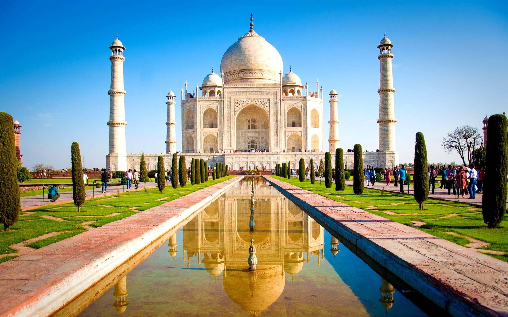

Taj Mahal

The Taj Mahal, a stunning marble palace and one of the seven wonders of the world, was had built by Shah Jahan for his late wife as a symbol of eternal love. Situated in Agra, it is a timeless architecture that draw tourists from all over the world due to its elegant structure and enchanting allure.
Golden Temple

The Golden Temple, a magnificent shrine and one of the most revered sites globally, was erected by devotees for spiritual reflection. Established in the 16th century, it stands as a symbol of unity and divine serenity. With its radiant golden facade, the Golden Temple beckons pilgrims and tourists alike, offering a tranquil haven in the heart of Amritsar.
Meenakshi Temple

The Meenakshi Temple, an exquisite marvel and a revered architectural gem, was constructed in devotion by its patrons. Nestled in Madurai, this timeless sanctuary stands as a testament to spiritual devotion and artistic grandeur. With its intricate structure and spiritual ambiance, the Meenakshi Temple captivates visitors globally, drawing them into its sacred embrace.